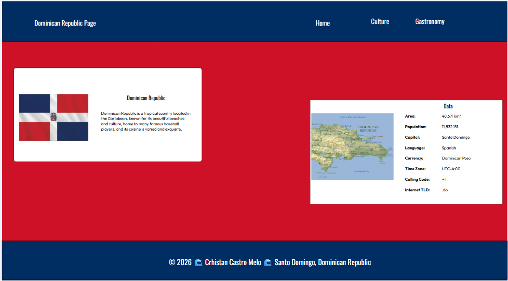
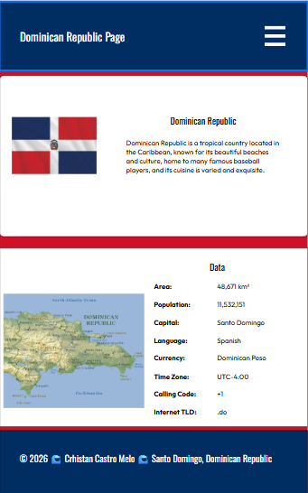

Site Purpose
The purpose of this site is to make my country known with different things such as culture and gastronomy so that other people can get to know it.
Scenarios
What is the Dominican Republic?
What can we find in the Dominican Republic?
Color Schema
I chose the following colors, for the primary color:#002D62 and for the secondary color:#CE1126
I chose those colors because they're the colors of the flag. I'll use the primary for the header and footer, and the secondary for the main.
Typography
I chose the following sources: Oswald and Outfit.
For the h and p in the footer I will use Oswald and for all the other p I will use Outfit.
Wireframe

